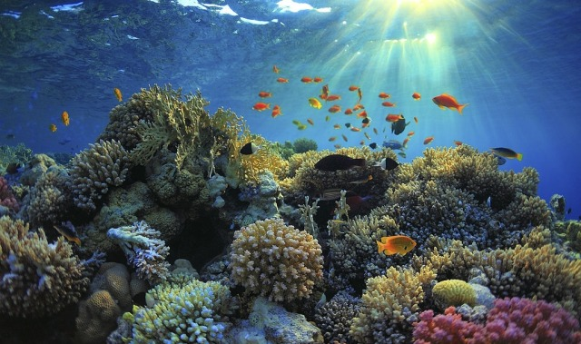
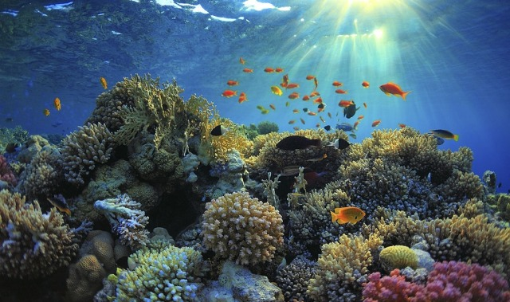
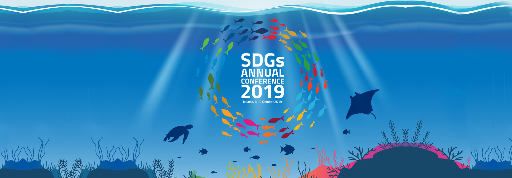
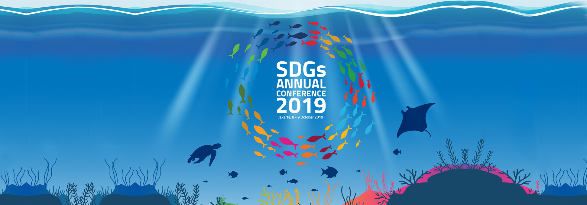

.png)


 

 

Dari tugas website untuk IL Kecil dari gabungan mata pelajaran IPS, PPKN, dan TIK. Saya telah mempelajari banyak hal, terutama tentang pentingnya adanya hubungan negara Indonesia dengan negara-negara lain di dunia. Karena, di dunia ini kita tidak hanya sendiri bangsa Indonesia, tapi kita juga memiliki teman-teman negara lain yang bisa saling menguntungkan untuk mensejahterakan kehidupan masyarakatnya. Dengan mendalami tentang hubungan bilateral, multilateral, dan regional, mengajarkan saya untuk selalu bersyukur untuk semua orang di dunia ini. Tanpa mereka, kita tidak bisa hidup dengan sejahtera. Selain itu, kita juga selalu harus membantu sesama, dengan saling bekerja sama, dan membangunkan suatu inovasi baru. Dapat memberi dampak positif bagi kedua pihak.
Dari membuat website ini, saya juga belajar dan mendalami tentang SDGs. SDGs yang telah mencakupi semua poin-poin penting untuk memperbaiki masalah-masalah kehidupan masyarakat. Dengan saya memilih SDG-14, yaitu ekosistem lautan. Saya belajar, bahwa untuk memperbaiki masalah ekosistem lautan Indonesia yang semakin parah, bisa dipecahkan dengan bersama-sama dengan negara lain. Kita bisa saling belajar dan saling membantu antar negara. Dengan itu, kita bisa memperbaiki dan membuat ekosistem lautan Indonesia lebih baik lagi untuk masyarakat pesisir dan makhluk hidup yang tinggal di lautan.
Website ini juga tidak akan bisa dibuat tanpa kecanggihan teknologi koding. Saya belajar untuk membuat sebuah karya melalui teknologi koding, dengan ini saya dapat membuat sebuah website yang dapat mengajarkan teman-teman lain tentang pentingnya kerja sama internasional Indonesia. Terutama di era modern sekarang, saya harus bisa memanfaatkan kecanggihan teknologi ini untuk hal yang baik. Seperti membuat website yang dapat memberi ajaran positif untuk orang lain.
Terima kasih telah membaca website ini, semoga bermanfaat! Tuhan memberkati!!